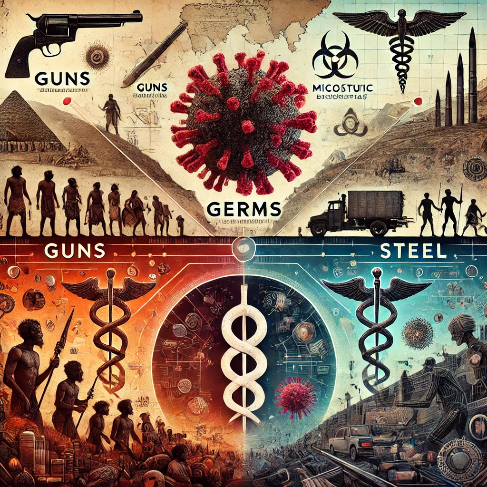

총, 균, 쇠
목차
작가
재레드 다이아몬드
출판일
1997년
감상평에 대한 AI그림
문명의 발전이 단순히 인간적인 요소뿐만 아니라 환경이나 지리적 요인에 의해 정해진다는 내용이 흥미로웠다.

감상평에 대한 AI평가
이 감상평은 다음의 감정을 중심으로 구성되어 있습니다.
✨ 흥미로움 - 기존에 생각하지 못했던 시각을 새롭게 접하면서 흥미를 느낀 것 같습니다.
✨ 경이로움 - 새로운 사실을 인식하면서 세상을 바라보는 시야가 넓어졌을 가능성이 있습니다.
✨ 놀라움 - 책의 내용이 예상 밖의 통찰이었을 가능성이 큽니다.